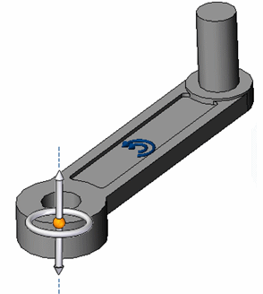

Activity: Apply a centrifugal load
In this activity, you will define a centrifugal load for a lawn mower blade at its top speed, at a steady-state condition. You will also add a fixed constraint.
A centrifugal load is generated when a body rotates about an axis. Use the Centrifugal command in the Body Loads group to apply a centrifugal load to a part or an assembly. The load is applied to the entire model.
The centrifugal load is represented by two direction-of-rotation symbols on the model. These represent angular velocity and angular acceleration. You can set these independently to clockwise or counterclockwise, and off.

-
Open the file FE_blade.par.
Simulation models are delivered in the \Program Files\Siemens\Solid Edge 2023\Training\Simulation folder.
The Simulation pane shows that a linear static study already exists in this file, so you do not have to create one.


-
Define a centrifugal load.
-
Select Simulation tab→Body Loads group→Centrifugal.

-
Select the origin knob of the steering wheel and drag the steering wheel to align it with the axis of the mounting hole. When the inner face of the mounting hole highlights, release the mouse button.
Note:For more information, see Orient the steering wheel.
The direction of the centrifugal load arrows should match the direction shown in the following illustration. If necessary, you can use the Flip Angular Velocity button and the Flip Angular Acceleration button on the command bar to reverse their directions.

-
Type 3600 rpm in the Angular Velocity dynamic input box.
Type 0 rpm ^2 in the Angular Acceleration dynamic input box.

-
Press Enter. Click to finish.

Note:If you define an angular acceleration, the finished load symbol displays both arrows.

-
-
Place a fixed constraint.
-
Select Simulation tab→Constraints group→Fixed.

-
Select the mounting hole cylindrical face.

-
Right-click to accept, and click to finish.

-
-
Close the file without saving it.
How do I
Define a loadActivity: Apply a bearing load
Activity: Apply a torque load
Activity: Apply a body temperature load
Learn more
Creating and using loadsLoad labels and symbols
Structural and body loads
Thermal loads
External loads (imported loads)
Loads directional steering wheel
Look up more details
Loads command barThermal Load Options dialog box
Radiation Load Options dialog box
Color dialog box
Graphic Symbol Size dialog box